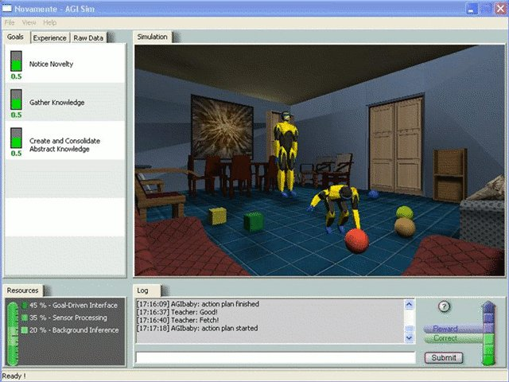
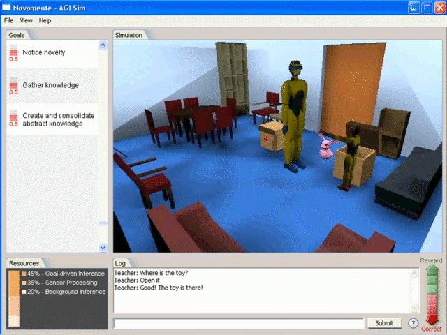

en ru
Artificial General Intelligence Simulator
 
cvs -d:pserver:anonymous@agisim.cvs.sourceforge.net:/cvsroot/agisim login
cvs -z3 -d:pserver:anonymous@agisim.cvs.sourceforge.net:/cvsroot/agisim co -P modulename
AGISIM is a GPL C++ simulation in 3D using the Crystal Space 3D engine promoted by the Artificial General Intelligence Research Institute for the Novamente Cognition Engine. The Artificial General Intelligence Research Institute is connected with the Singularity Institue for Artificial Intelligence. I recomend to search for it in the article "with friends like these" from the Guardian.
© AIKernel 2011
02.05.2011 - 02.05.2011